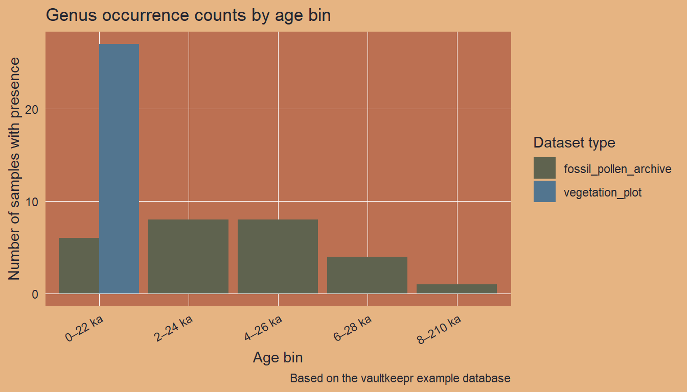

# Build (or reuse) the example database and return its file path
path_to_db <- source("helper_make_example_db.R")$valueIntroduction
One of the most common tasks in palaeoecology is to reconstruct where and when a plant taxon was present. VegVault stores both modern vegetation plot data and fossil pollen archives in a single database, making it possible to reconstruct taxon distributions across time within a single workflow.
The core idea of vaultkeepr is to build a plan first, then execute it. Each function call — get_datasets(), select_dataset_by_type(), get_samples(), and so on — adds a step to a lazy SQL query stored in the plan object without touching the database. When the plan is fully specified, a single call to extract_data() executes the complete query and returns a tibble ready for analysis.
In this article we study the spatio-temporal distribution of the genus Betula (birch) across Western North America (WNA) from the present back to 8,000 calibrated years BP, combining modern vegetation_plot records (sourced from BIEN and sPlotOpen) with fossil_pollen_archive records (sourced from Neotoma-FOSSILPOL). Fossil pollen records extend the temporal window far beyond any modern survey, while modern vegetation plots provide the spatial detail and species-level precision needed to calibrate or validate palaeoecological reconstructions.
We use a small example database (built automatically below) that mirrors the structure and naming conventions of a real VegVault file. You can swap the path for your own VegVault download to run the same code on real data.
Working with real data
Download the full VegVault database from the Database Access page to run this code on real global vegetation data. See the Database Content page for an overview of coverage and statistics.
Step 1 — Open the vault
open_vault() creates a connection to the VegVault SQLite file and returns a vault_pipe object. This object is the plan — it carries both the live database connection and the accumulating lazy query through every subsequent step. No data is loaded into memory here; we are simply opening the vault and initialising the plan.
library(vaultkeepr)
plan <-
open_vault(path = path_to_db)Step 2 — Add dataset metadata
get_datasets() extends the plan with the Datasets table — the central organising unit in VegVault. Each dataset has a unique ID, geographic coordinates (coord_long, coord_lat), a dataset type (e.g. vegetation_plot), a source type (e.g. BIEN, sPlotOpen, Neotoma-FOSSILPOL), and a sampling method. At this point every dataset in the database is in scope — subsequent steps narrow the selection.
plan <-
plan |>
get_datasets()Step 3 — Filter by dataset type
VegVault contains four dataset types:
-
vegetation_plot— contemporary vegetation surveys (BIEN, sPlotOpen) -
fossil_pollen_archive— sediment-core pollen records (Neotoma-FOSSILPOL) -
traits— functional trait measurements (TRY) -
gridpoints— artificially created datasets holding abiotic (climate/soil) data, spatially linked to the other three types
For a full technical description of each dataset type, see the Datasets section of the VegVault Database Structure.
select_dataset_by_type() adds a type filter to the plan. Here we keep only the two types that carry occurrence information.
plan <-
plan |>
select_dataset_by_type(
sel_dataset_type = c(
"vegetation_plot",
"fossil_pollen_archive"
)
)Step 4 — Filter by geography
We extend the plan with a geographic filter: a bounding box in the Pacific Northwest (longitude −116 to −114 °W, latitude 44 to 46 °N), an area that captures both BIEN vegetation plots and Neotoma-FOSSILPOL pollen cores. The filter is pushed into the SQL engine — no data is transferred yet.
plan <-
plan |>
select_dataset_by_geo(
long_lim = c(-116, -114),
lat_lim = c(44, 46)
)
#> The data does not contain the all dataset types specified in `vec_dataset_type`.
#> Changing `vec_dataset_type` to the dataset types present in the data as: vegetation_plot, fossil_pollen_archiveStep 5 — Add sample information
get_samples() extends the plan with sample-level metadata (age, sample size, sample name). In VegVault, samples are the primary unit of data — each sample belongs to exactly one dataset and carries a temporal label. Contemporary samples have age = 0; fossil pollen samples have age expressed in calibrated years before present (cal yr BP), where present = 1950 AD.
plan <-
plan |>
get_samples()Step 6 — Filter by age
We add an age filter to the plan, keeping samples from the present (age = 0) back to 8,000 cal yr BP — the entire Holocene. This window brackets the period after the last major ice-sheet retreat, during which modern plant communities became established.
plan <-
plan |>
select_samples_by_age(age_lim = c(0, 8000))
#> The data does not contain the all dataset types specified in `vec_dataset_type`.
#> Changing `vec_dataset_type` to the dataset types present in the data as: vegetation_plot, fossil_pollen_archiveStep 7 — Add taxa and harmonise to genus level
get_taxa() extends the plan with taxonomic occurrence data, including abundance values (value). Raw taxon names in VegVault come directly from primary sources and may differ between databases (e.g. Betula pendula in a vegetation plot vs. Betula in a pollen record). The classify_to = "genus" argument uses the pre-computed TaxonClassification table — built with the {taxospace} package using the GBIF Taxonomy Backbone — to roll all identifications up to genus level, making vegetation plot records and fossil pollen records directly comparable.
Warning
classify_totriggers a computationally expensive join against theTaxonClassificationtable. On a large query this can be very slow. In addition, the taxonomic harmonisation is produced by an automated process: misclassifications can occur, especially for ambiguous names or taxa not covered by the GBIF backbone. Always verify results for taxa that are critical to your analysis.
plan <-
plan |>
get_taxa(classify_to = "genus")Step 8 — Discover available taxon names
Before committing to a taxon filter, get_taxon_names() lets you browse the distinct taxon names present in the current query plan without executing a full extract_data() call. This is useful when you are unsure of the exact spelling, the harmonised genus name, or simply which taxa are represented in the filtered data.
get_taxon_names() does not modify the plan — it queries the database and returns a small tibble, leaving plan ready for the next step.
taxon_names <-
plan |>
get_taxon_names()
taxon_names
#> # A tibble: 9 × 1
#> taxon_name
#> <chr>
#> 1 Alnus
#> 2 Artemisia
#> 3 Betula
#> 4 Bromus
#> 5 Corylus
#> 6 Festuca
#> 7 Helianthus
#> 8 Poa
#> 9 SenecioStep 9 — Filter to a single genus
select_taxa_by_name() adds a taxon filter to the plan, retaining only rows matching the supplied name. We focus on Betula (birch), a genus with a well-documented Holocene range shift across the Northern Hemisphere that is captured in both modern vegetation surveys and fossil pollen records.
plan <-
plan |>
select_taxa_by_name(sel_taxa = "Betula")Step 10 — Execute the plan
The plan is now fully specified. extract_data() executes the complete lazy query, fetches the results from the database into R memory, and returns a nested tibble — one row per dataset — with samples, community, and any additional data packed as list-columns. See Exploring extract_data() for a detailed walkthrough of both output modes. The verbose = FALSE argument suppresses progress messages.
data_wna_genus <-
plan |>
extract_data(verbose = FALSE)
dplyr::glimpse(data_wna_genus)
#> Rows: 54
#> Columns: 9
#> $ dataset_name <chr> "dataset_1", "dataset_2", "dataset_3", "datase…
#> $ data_source_desc <chr> "EVA (European Vegetation Archive)", "EVA (Eur…
#> $ dataset_type <chr> "vegetation_plot", "vegetation_plot", "vegetat…
#> $ dataset_source_type <chr> "BIEN", "BIEN", "BIEN", "sPlotOpen", "sPlotOpe…
#> $ coord_long <dbl> -115, -115, -115, -115, -115, -115, -115, -115…
#> $ coord_lat <dbl> 45, 45, 45, 45, 45, 45, 45, 45, 45, 45, 45, 45…
#> $ sampling_method_details <chr> "Standardised vegetation plot survey (1–1000 m…
#> $ data_samples <list> [<tbl_df[2 x 5]>], [<tbl_df[2 x 5]>], [<tbl_d…
#> $ data_community <list> [<tbl_df[2 x 2]>], [<tbl_df[2 x 2]>], [<tbl_d…Full pipeline
All the steps above — building the plan and executing it — can be written as a single expression:
data_wna_genus <-
open_vault(path = path_to_db) |>
get_datasets() |>
select_dataset_by_type(
sel_dataset_type = c(
"vegetation_plot",
"fossil_pollen_archive"
)
) |>
select_dataset_by_geo(
long_lim = c(-116, -114),
lat_lim = c(44, 46)
) |>
get_samples() |>
select_samples_by_age(age_lim = c(0, 8000)) |>
get_taxa(classify_to = "genus") |>
select_taxa_by_name(sel_taxa = "Betula") |>
extract_data()Visualising the data
We bin the samples into 2,000-year intervals and count unique presences per bin and dataset type.
data_plot <-
data_wna_genus |>
dplyr::mutate(
data_occ = purrr::map2(
.x = data_samples,
.y = data_community,
.f = ~ dplyr::left_join(.x, .y, by = "sample_name")
)
) |>
dplyr::select(
dataset_name, dataset_type, coord_long, coord_lat, data_occ
) |>
tidyr::unnest(cols = data_occ) |>
dplyr::filter(.data$Betula > 0) |>
dplyr::distinct(
dataset_name, dataset_type, age, coord_long, coord_lat
) |>
dplyr::mutate(
age_bin = paste0(
floor(age / 2000) * 2,
"\u20132",
floor(age / 2000) * 2 + 2,
" ka"
)
)
ggplot2::ggplot(
data = data_plot,
mapping = ggplot2::aes(x = age_bin, fill = dataset_type)
) +
ggplot2::geom_bar(position = "dodge") +
ggplot2::scale_fill_manual(
values = palette_dataset_type,
name = "Dataset type"
) +
ggplot2::labs(
title = "Genus occurrence counts by age bin",
x = "Age bin",
y = "Number of samples with presence",
caption = "Based on the vaultkeepr example database"
) +
ggplot2::theme(axis.text.x = ggplot2::element_text(angle = 30, hjust = 1))
Next steps
- Filter to multiple genera with
select_taxa_by_name(sel_taxa = c(...)) - Retrieve the underlying references with
get_references() - Combine with climate data — see the vegetation and climate article
- A comparable real-data example — tracking Picea across North America — is shown in the VegVault Usage Examples
- When publishing results, cite VegVault using the data paper and use
get_references()for primary source citations